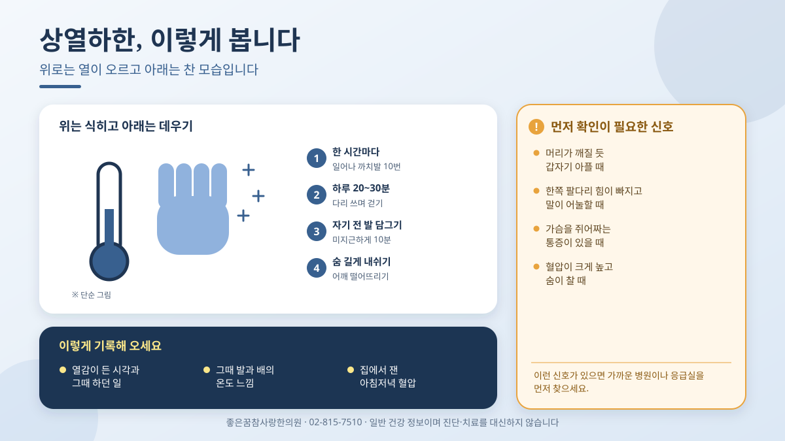

이종호 한의사 감수좋은꿈참사랑한의원 대표원장 (한의사 면허번호 19769)발행 2026-11-26 · 수정 2026-11-26
이 글의 차례
오후가 되면 얼굴이 화끈 달아오르고 머리가 지끈거리는데, 책상 밑의 발은 얼음장처럼 차갑다는 분이 계십니다. 눈은 뻑뻑하고 가슴은 답답한데 아랫배는 늘 서늘해서 겨울이면 배에 핫팩을 붙이고 다니신다고 합니다. 위아래가 따로 노는 것 같다는 말씀을 진료실에서 자주 듣습니다.
진찰을 마치고 "위로는 열이 오르고 아래는 찬 모습이에요. 한의학에서는 상열하한이라고 부릅니다"라고 말씀드리면 많은 분이 고개를 끄덕이십니다. "맞아요, 딱 그래요. 그런데 그게 병인가요?" 이름이 붙으니 오히려 무언가 큰 문제처럼 느껴지시는 겁니다.
먼저 분명히 말씀드리겠습니다. 상열하한은 병명이 아닙니다. 검사로 확인하는 진단명도 아닙니다. 한의학에서 오랫동안 몸의 상태를 묘사할 때 써 온 전통적인 표현이고, 위 상, 열 열, 아래 하, 찰 한이라는 글자 그대로 진찰에서 본 모습을 묶어 설명하는 말입니다.
이 글에서는 상열하한이 어떤 몸의 모습을 가리키는지, 왜 그런 모습이 생긴다고 보는지, 진료실에서 무엇을 보고 이 설명을 쓰는지, 혈압이나 갱년기처럼 먼저 확인할 것은 무엇인지, 그리고 생활에서 위아래의 온도를 맞추는 습관은 어떻게 챙기면 좋은지를 차례로 말씀드리겠습니다.
상열하한은 어떤 몸 상태를 말하나요?
한의학에서는 건강한 몸을 머리는 시원하고 발은 따뜻한 상태로 설명해 왔습니다. 위로 오르는 열은 아래로 내려 주고, 아래의 찬 기운은 데워 올려 위아래가 고르게 돌아야 한다고 봅니다. 이 흐름이 거꾸로 되어 열은 위에 몰리고 찬 기운은 아래에 머문 모습을 상열하한이라고 부릅니다.
위쪽으로는 얼굴이 달아오르고, 머리가 무겁거나 아프고, 눈이 충혈되거나 뻑뻑하고, 입이 마르고, 가슴이 답답하거나 두근거리는 모습이 나타납니다. 아래쪽으로는 아랫배가 차고, 발과 다리가 시리고, 소화가 더디거나 설사가 잦은 모습이 함께 나타납니다.
한쪽만 보면 열이 많은 사람처럼도, 몸이 찬 사람처럼도 보입니다. 그래서 얼굴 열만 보고 몸을 식히려 하면 배와 발이 더 차가워지고, 발만 보고 데우는 데만 신경 쓰면 얼굴 열이 더 오른다고 느끼시는 분이 많습니다. 위아래를 함께 보는 것이 이 말에서 가장 중요한 점입니다.
이 말도 사람에게 붙이는 딱지가 아닙니다. 업무 긴장이 큰 시기, 시험 기간, 갱년기 무렵처럼 특정한 때에 이런 모습이 짙어졌다가 생활이 바뀌면 옅어지기도 합니다. 지금 이 시기의 몸을 묘사하는 말로 이해해 주시면 됩니다.
왜 위는 덥고 아래는 찬 상태가 생긴다고 보나요
한의학에서는 열은 본래 위로 오르려 하고 찬 기운은 아래로 가라앉으려 한다고 설명해 왔습니다. 몸의 가운데, 특히 소화를 맡은 쪽이 위아래를 이어 주며 열을 내리고 냉기를 데우는데, 이 연결이 약해지거나 위로 오르는 힘이 지나치게 커지면 위아래가 갈라진다고 봅니다.
생활에서 흔히 보는 이유는 이렇습니다.
- 오래 이어진 긴장과 스트레스, 화를 참는 일
- 하루 종일 앉아서 화면을 보며 머리만 쓰는 생활
- 하체를 거의 움직이지 않아 다리 근육을 쓰지 않는 생활
- 찬 음료와 날 음식으로 배를 차게 하는 습관
- 짧은 잠과 늦은 밤 활동
- 갱년기처럼 몸의 리듬이 크게 바뀌는 시기
긴장이 가장 자주 이야기됩니다. 마음이 쫓기면 어깨가 올라가고 숨이 얕아지면서 얼굴과 머리로 열이 오르는 느낌이 생깁니다. 한의학에서는 이것을 기운이 위로 치솟는 모습으로 설명합니다. 동시에 소화가 위축되고 배와 발이 서늘해지기 쉽습니다.
앉아서 머리만 쓰는 생활도 큰 몫을 합니다. 다리를 움직이지 않으면 아래쪽의 흐름이 느려지고 발이 차가워지는 반면, 화면을 오래 보며 집중하면 눈과 머리에는 열감이 쌓입니다. 사무직이나 수험생분들께 상열하한이라는 말을 자주 쓰게 되는 이유입니다.
계절로는 난방이 강한 겨울에 더 두드러집니다. 따뜻한 실내 공기는 위에 머물고 바닥은 차가워서, 얼굴은 화끈한데 발은 시린 환경이 만들어지기 쉽습니다.
현대 의학으로 보면 이런 모습 뒤에 자율신경의 균형 변화, 고혈압, 갱년기 변화, 갑상선 문제, 불안과 긴장, 안면홍조 같은 피부 문제가 숨어 있을 수 있습니다. 그래서 상열하한이라는 설명을 드리더라도 필요하면 병원 검사를 함께 권해 드립니다.
진맥·설진·문진에서는 무엇을 함께 보나요
진맥에서는 손목의 위쪽 자리와 아래쪽 자리를 나누어 봅니다. 상열하한에 가까운 분은 위쪽 자리의 맥은 들뜨듯 힘이 있는데 아래쪽 자리는 약하게 가라앉아 있는 경우가 많습니다. 다만 긴장하거나 서둘러 오신 직후에는 맥이 들뜰 수 있어 잠시 쉬신 뒤에 짚습니다.
설진에서는 혀끝과 혀 뿌리를 나누어 봅니다. 혀끝이 유난히 붉거나 붉은 점이 돋아 있고, 혀 뿌리 쪽은 엷거나 설태가 하얗고 촉촉한 모습을 상열하한과 연결해 설명해 왔습니다. 혀만으로 정하지 않고 다른 단서와 함께 봅니다.
문진에서는 열이 오르는 시각과 자리, 그때 무엇을 하고 있었는지, 두통과 눈의 피로, 가슴 답답함과 두근거림, 잠들기 어려움을 여쭙고, 동시에 아랫배와 발의 냉기, 찬 것을 먹은 뒤의 배 상태, 대변과 생리를 여쭙습니다. 위아래의 대답이 함께 맞아떨어질 때 상열하한이라는 설명을 조심스럽게 붙입니다.
세 가지는 서로를 확인하는 장치입니다. 얼굴이 붉어도 발과 배가 따뜻하다면 상열하한이라고 말씀드리지 않습니다. 반대로 맥과 혀가 뚜렷하지 않아도 위아래 온도 차이가 크고 오래 이어진다면 그 이유를 더 깊이 살펴봅니다.
생활에서 흔히 느끼는 모습
상열하한이라는 설명을 들으시는 분들이 흔히 말씀하시는 모습은 이렇습니다. 위아래 모습이 함께 겹쳐 오래 이어지는지가 중요합니다.
- 오후나 긴장할 때 얼굴이 화끈 달아오른다
- 머리가 무겁고 눈이 충혈되거나 뻑뻑하다
- 가슴이 답답하고 한숨이 자주 나온다
- 아랫배가 늘 서늘하고 손을 얹으면 차갑다
- 발이 시려 잠들기 어렵다
- 찬 것을 먹으면 배가 불편하고 설사가 잦다
이런 모습은 더운 방에 들어갔을 때 잠깐 얼굴이 붉어지는 것과는 다릅니다. 실내 온도와 상관없이 위아래의 온도 차이가 느껴지고, 몇 주씩 되풀이된다면 기록해 두시면 좋습니다.
비슷해 보이지만 다르게 살피는 것
얼굴이 자주 붉어지고 뒷목이 뻐근하며 머리가 무겁다면 혈압을 먼저 재어 보셔야 합니다. 상열하한의 모습과 고혈압의 모습이 겹치는 경우가 있어서, 집에서 아침저녁으로 혈압을 재어 기록해 오시길 권합니다. 혈압이 높다면 내과 진료가 먼저입니다.
갱년기의 열감과도 겹칩니다. 갱년기에는 시간과 상관없이 갑자기 얼굴과 가슴으로 열이 확 오르고 땀이 쏟아졌다가 금세 식는 일이 잦습니다. 생리 주기가 바뀌는 시기라면 산부인과 상담을 함께 받아 보시는 것이 좋습니다.
얼굴이 쉽게 붉어지고 볼과 코에 실핏줄이 보이며 따갑다면 안면홍조나 주사 같은 피부 문제를 함께 살핍니다. 이 경우 피부과 진료가 도움이 될 수 있습니다.
음허나 양허와도 헷갈리실 수 있습니다. 손발바닥까지 화끈거리고 입마름과 밤 식은땀이 있으면 음허 쪽, 얼굴까지 창백하고 몸 전체가 차면 양허 쪽 설명을 더 씁니다. 위는 덥고 아래는 찬 대비가 뚜렷할 때 상열하한이라는 말을 씁니다.
스스로 점검해 볼 것
집에서 내 몸을 돌아보는 질문입니다. 진료실에서 이야기할 거리를 모은다고 생각해 주세요.
- 얼굴이 달아오를 때 발을 만져 보면 어떤가요?
- 열이 오르는 시각은 하루 중 언제이고, 그때 무엇을 하고 있었나요?
- 하루에 앉아 있는 시간과 걷는 시간은 어느 정도인가요?
- 찬 음료나 아이스커피를 하루에 몇 잔 드시나요?
- 집에서 잰 혈압은 어느 정도인가요?
질문에 답하다 보면 위아래가 갈라지는 계기가 보이기 시작합니다. 긴장이 먼저인지, 오래 앉는 생활이 먼저인지, 찬 음식이 먼저인지에 따라 생활에서 먼저 손볼 곳이 달라집니다.
먼저 이렇게 여쭙니다
- 얼굴 열감과 발 냉기는 언제부터 느끼셨나요?
- 두통, 눈의 피로, 가슴 답답함 가운데 무엇이 가장 불편한가요?
- 잠들기 어렵거나 자주 깨나요?
- 소화와 대변, 생리는 어떤가요?
- 혈압이나 갑상선 검사를 받은 적이 있나요?
- 드시는 약이나 영양제가 있나요? 임신 중이거나 가능성이 있나요?
일상에서 먼저 해 볼 수 있는 것
위아래의 온도를 맞추는 일은 위의 열을 내리고 아래를 데우는 것을 함께 하는 데서 시작합니다. 아래 가운데 지금 가장 쉬운 하나부터 골라 보세요.
- 한 시간 앉아 있으면 일어나 걷거나 까치발 들기 10번
- 하루 20~30분 걷기로 다리 근육 쓰기
- 잠들기 전 발을 따뜻한 물에 10분 담그기
- 배와 발목은 따뜻하게, 목과 얼굴 주변은 답답하지 않게 입기
- 찬 음료 대신 미지근한 물 마시기
- 긴장한 순간에 숨을 길게 내쉬며 어깨를 떨어뜨리기
다리를 움직이는 것이 가장 먼저입니다. 걷기, 계단 오르기, 까치발 들기처럼 종아리와 허벅지를 쓰는 움직임은 아래쪽 흐름을 돕고, 몸을 움직이는 동안 머리의 긴장도 조금 풀린다고 말씀하시는 분이 많습니다.
화면을 오래 보는 분은 50분마다 10분은 먼 곳을 보며 눈을 쉬어 주세요. 얼굴 열감이 심할 때는 미지근한 물로 세수하는 것도 도움이 됩니다. 너무 찬물은 오히려 반동으로 더 달아오른다고 느끼시는 분도 있습니다.
실내 난방은 너무 높지 않게, 바닥은 따뜻하게 하는 쪽이 좋습니다. 발이 차서 잠들기 어려우면 수면 양말을 신고, 이불은 발 쪽을 조금 더 두툼하게 덮어 보세요.
마음의 긴장을 풀어 주는 시간도 필요합니다. 잠들기 전 5분 동안 등을 대고 누워 배에 손을 얹고, 내쉬는 숨을 들이쉬는 숨보다 조금 길게 해 보세요. 숨이 배까지 내려가면 위로 몰린 긴장이 함께 내려가는 느낌을 받으실 수 있습니다.
한의원에서 함께 살필 수 있는 경우
- 검사는 괜찮다는데 얼굴 열감과 발 냉기가 함께 이어지는 경우
- 긴장하면 얼굴이 달아오르고 머리가 아프며 소화가 막히는 경우
- 오래 앉아 일하면서 눈의 피로와 다리 냉기가 함께 심해진 경우
- 열감과 냉기 때문에 잠들기 어려운 경우
좋은꿈참사랑한의원에서는 진맥과 설진, 문진, 위아래 온도 확인을 마친 뒤 지금의 모습을 쉬운 말로 먼저 설명드립니다. 상열하한이라는 말을 쓰더라도 그것이 긴장, 앉는 생활, 찬 음식 가운데 무엇과 이어지는지를 함께 말씀드립니다.
진찰한 내용에 따라 침, 온열 관리, 한약 상담 가운데 지금 상태에 맞는 것을 정합니다. 한약을 상의할 때는 드시는 약과 영양제를 모두 확인하고 신중하게 정합니다. 임신 중이거나 가능성이 있다면 먼저 알려 주시고 산부인과 선생님과도 상의해 주세요.
혈압약이나 갱년기 약처럼 병원에서 처방받은 약은 상의 없이 멈추지 않고 그대로 이어 가시면 됩니다. 한의원 진료는 그 곁에서 위아래의 흐름과 생활을 함께 살핀다고 생각해 주세요.
이렇게 기록해 오시면 상담이 쉬워집니다
- 얼굴 열감이 든 시각과 그때 하던 일
- 그때 발과 배의 온도 느낌
- 집에서 잰 아침저녁 혈압
- 앉아 있던 시간과 걸은 시간
- 긴장하거나 화가 났던 날, 잠든 시각
2주 정도 적어 보시면 열이 오르는 상황과 생활 사이의 연결이 보이기 시작합니다. 빈칸이 있어도 괜찮으니 편하게 적어 주세요.
상열하한이라는 말을 들으셨다면
상열하한은 몸이 '위아래가 잘 통하도록 해 달라'고 보내는 신호를 한의학의 말로 옮긴 것이라고 생각해 주세요. 무서운 병명이 아니라, 머리와 다리를 쓰는 균형, 긴장과 쉼의 균형을 돌아보자는 제안입니다.
이번 주에는 한 시간마다 일어나 걷기, 잠들기 전 발 담그기 가운데 하나만 골라 보세요. 다음에 오시면 맥과 위아래 온도를 다시 보면서 그 사이 몸이 어떻게 움직였는지 함께 살펴보겠습니다.
이런 증상은 먼저 확인이 필요합니다
- 갑자기 머리가 깨질 듯 아프거나 한쪽 팔다리에 힘이 빠지고 말이 어눌해지는 경우
- 가슴을 쥐어짜는 듯한 통증이 있거나 혈압이 평소보다 크게 높고 숨이 찬 경우
이런 신호가 있으면 한의원보다 가까운 병원이나 응급실을 먼저 찾으세요.
함께 읽으면 좋은 글
- 얼굴이 쉽게 붉어지고 화끈거리는 안면홍조와 주사(딸기코)는 어떻게 살피나요?
- 뒷목이 당기고 머리가 아프면 혈압이 오른 걸까요? 고혈압과 두통·뒷목 당김은 어떻게 살피나요?
- 얼굴이 달아오르고 땀이 갑자기 날 때는 어떤 점을 살펴보나요?
- 손발이 찬 수족냉증, 레이노·갑상선·빈혈과 어떻게 구분하나요?
- 검사에서는 이상이 없다는데 두근거림, 어지럼, 소화불량, 손발 저림이 번갈아 찾아오는 자율신경실조는 어떻게 살피나요?

여쭙는 것
- 얼굴 열감과 발 냉기는 언제부터 느끼셨나요?
- 두통, 눈의 피로, 가슴 답답함 가운데 무엇이 가장 불편한가요?
- 잠들기 어렵거나 자주 깨나요?
생활에서 해 볼 것
- 한 시간 앉아 있으면 일어나 걷거나 까치발 들기 10번
- 하루 20~30분 걷기로 다리 근육 쓰기
- 잠들기 전 발을 따뜻한 물에 10분 담그기
한의원에서 함께 살필 것
- 검사는 괜찮다는데 얼굴 열감과 발 냉기가 함께 이어지는 경우
- 긴장하면 얼굴이 달아오르고 머리가 아프며 소화가 막히는 경우
- 오래 앉아 일하면서 눈의 피로와 다리 냉기가 함께 심해진 경우
먼저 확인이 필요한 신호
- 갑자기 머리가 깨질 듯 아프거나 한쪽 팔다리에 힘이 빠지고 말이 어눌해지는 경우
- 가슴을 쥐어짜는 듯한 통증이 있거나 혈압이 평소보다 크게 높고 숨이 찬 경우
한눈에 보는 표
| 구분 | 핵심 |
|---|---|
| 여쭙는 것 | 얼굴 열감과 발 냉기는 언제부터 느끼셨나요? 두통, 눈의 피로, 가슴 답답함 가운데 무엇이 가장 불편한가요? |
| 생활에서 해 볼 것 | 한 시간 앉아 있으면 일어나 걷거나 까치발 들기 10번 하루 20~30분 걷기로 다리 근육 쓰기 |
| 한의원에서 함께 살필 것 | 검사는 괜찮다는데 얼굴 열감과 발 냉기가 함께 이어지는 경우 긴장하면 얼굴이 달아오르고 머리가 아프며 소화가 막히는 경우 |
| 먼저 확인이 필요한 신호 | 갑자기 머리가 깨질 듯 아프거나 한쪽 팔다리에 힘이 빠지고 말이 어눌해지는 경우 가슴을 쥐어짜는 듯한 통증이 있거나 혈압이 평소보다 크게 높고 숨이 찬 경우 |
자주 묻는 질문
상열하한은 병인가요?
병명이 아닙니다. 위로는 열이 오르고 아래는 찬 모습을 한의학에서 전통적으로 묘사하는 말입니다. 다만 얼굴 열감과 두통이 잦다면 혈압이나 갱년기 변화처럼 먼저 확인할 것이 있는지 함께 살핍니다.
얼굴에 열이 오르면 찬물로 식히는 게 좋은가요?
잠깐은 시원하지만, 너무 찬물은 오히려 반동으로 더 달아오른다고 느끼시는 분이 많습니다. 미지근한 물로 세수하고, 발을 따뜻하게 하며, 숨을 길게 내쉬는 쪽을 먼저 권해 드립니다.
반신욕이나 족욕을 하면 도움이 되나요?
발과 다리를 따뜻하게 하는 시간은 위아래 온도 차이를 줄이는 데 도움이 될 수 있습니다. 다만 물이 너무 뜨겁거나 오래 하면 얼굴 열감이 더 오르거나 어지러울 수 있으니 10~15분 정도 미지근하게 하세요.
상열하한은 체질처럼 계속 가나요?
정해진 체질이 아니라 시기에 따라 달라지는 상태로 봅니다. 긴장과 쉼, 앉는 시간과 걷는 시간의 균형이 돌아오면 그 모습이 옅어지는 경우가 많아서 시간을 두고 다시 살핍니다.
좋은꿈참사랑한의원은 재진 때 지난번 이야기부터 이어서 여쭙니다. 진료시간과 예약은 오시는 길에서 확인하세요.
어디서 상담받을 수 있나요?
좋은꿈참사랑한의원은 서울 동작구 만양로2길 2 신성빌딩 3층·5층(서울 동작구 상도동, 7호선 상도역 3번 출구 근처)에 있습니다. 한의사 3명(이종호 대표원장, 조영기 수석진료원장, 정원영 진료원장)이 진료합니다. 진료시간은 평일 09:30~20:00(점심 13:00~14:00), 토·일·공휴일 09:30~15:00이며, 방문 전 전화로 확인을 권합니다. 예약은 네이버 예약, 카카오톡 상담, 전화 02-815-7510로 받습니다.
이 글은 일반적인 건강 정보이며 개인의 진단이나 치료를 대신하지 않습니다. 증상이 있거나 복용 중인 약이 있다면 진료를 통해 확인하세요. 치료 효과는 개인마다 다를 수 있습니다.
작성 기준: 일반적으로 알려져 있는 건강 정보를 참고해 정리했습니다(대표원장 감수). 증상 기록은 1~2주 동안 하루 1회, 비슷한 시간에 적어 오시면 지난 상태와 비교하기 쉽습니다.